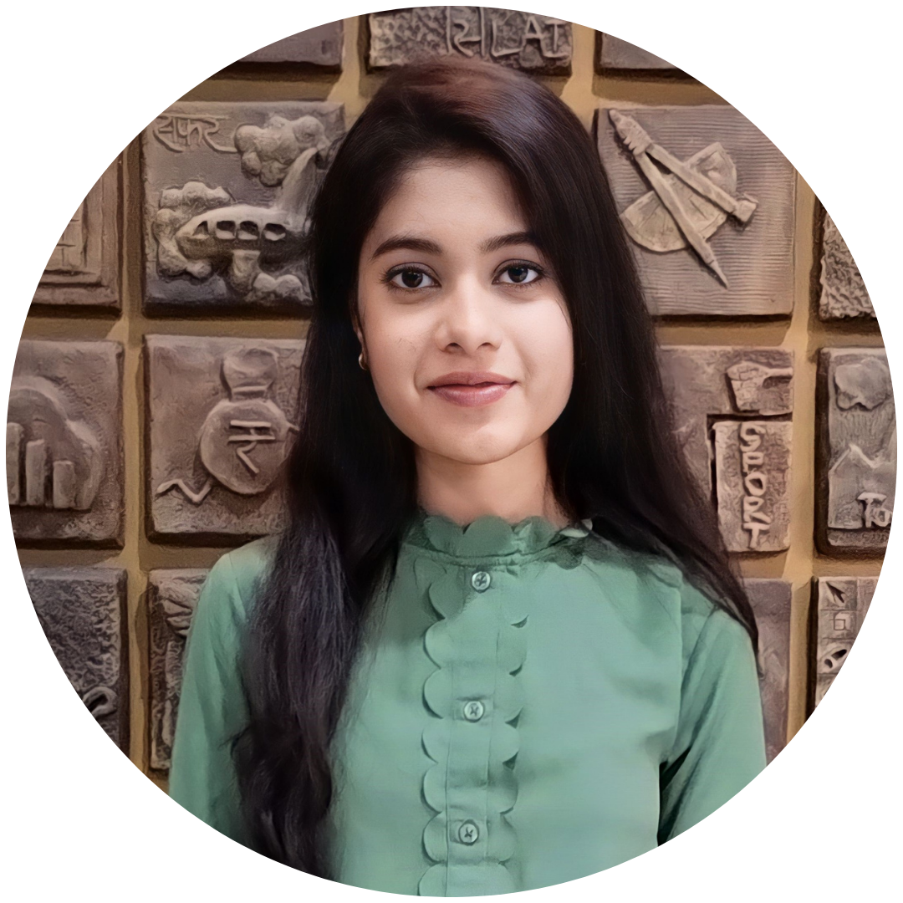

AVANTIKA RAVATALE

 Graduate |
Graduate |  Web Developer
Web Developer
SUMMARY
Recent B.Tech graduate eager to apply technical expertise, analytical acumen, and problem-solving skills in a professional setting. Driven by ambition to excel in coding and contribute to organizational and personal growth. A proactive learner with a passion for acquiring new skills and making a meaningful impact. Ready to leverage engineering knowledge and fresh perspective to drive innovation and efficiency in the workplace.
EDUCATION
BTECH in Electronics and Telecommunications
Vishwakarma Institute Of Information Technology | Pune, India
CPGA: 8.89 | 2020-2024
Higher Secondary Education
Adarsh Vidyamandir | Vita, India
Percentage: 80.41% | 2019
Secondary Education
Bharati Vidyapeeth English Medium School | Vita, India
Percentage: 96.20% | 2017
PROJECTS
Cricket Data Analytics
- Analysed T20World Cup 2022 data using webscraping and Python(Pandas)to build optimal cricket teams through
data visualisation using Power BI.
- Identified key player metrics(battingaverage, bowling economy,etc.) for informed player selection. Demonstrated proficiency in data analysis,data visualisation, and web scraping with Python.
- Technologies: Python, libraries(Pandas, Matplotlib)Data Visualization, Power BI, Javascript
Digital Asset Marketplace
- Developed and managed a digital asset marketplace, including creating listings, facilitating transfers, and verifying authenticity.
Established the blockchain network, ensuring scalability and cost-effectiveness. Marketed the marketplace while adhering to secure regulations for digital assets.
- Created a front-end application with a Solidity-based back-end.
- Technologies: Blockchain, Solidity, Truffle, Ganache, IPFS, web3.js, HTML, CSS, Javascript, Tailwind CSS, React.
Plant Disease Detection using CNN
- Developed a neural network model using the PlantVillage dataset (20,639 images) and ResNet50 CNN, achieving 96.7% accuracy in classifying diseases in tomatoes, potatoes, and bell peppers.
- Created a web application with ReactJS and FastAPI, featuring real-time plant leaf disease identification through drag-and-drop functionality.
- Technologies: Python, Libraries(Pandas, Tensorflow, Keras, Numpy, Matplotlib), HTML, CSS , Javascript, React
SKILLS
Technical Skills
- Languages: Python, Java, C++, HTML5, CSS, JavaScript, ReactJS.
- Libraries/Frameworks: Pandas, Numpy, Matplotlib, Keras, Tensorflow.
- Applications: MS Office, VS Code, Intellij, Anaconda, Git, Power BI.
Soft Skills
Problem solving, Teamwork, Time management,Interpersonal skills, Presentation skills, Collaboration.
CERTIFICATIONS
Learning Java 11
LinkedIn | Issued Dec 2022
C for Everyone: Programming Fundamentals
Coursera | Issued Dec 2021
HOBBIES
- Artwork & Painting
- Watching movies and webseries
- Travelling
CONTACT